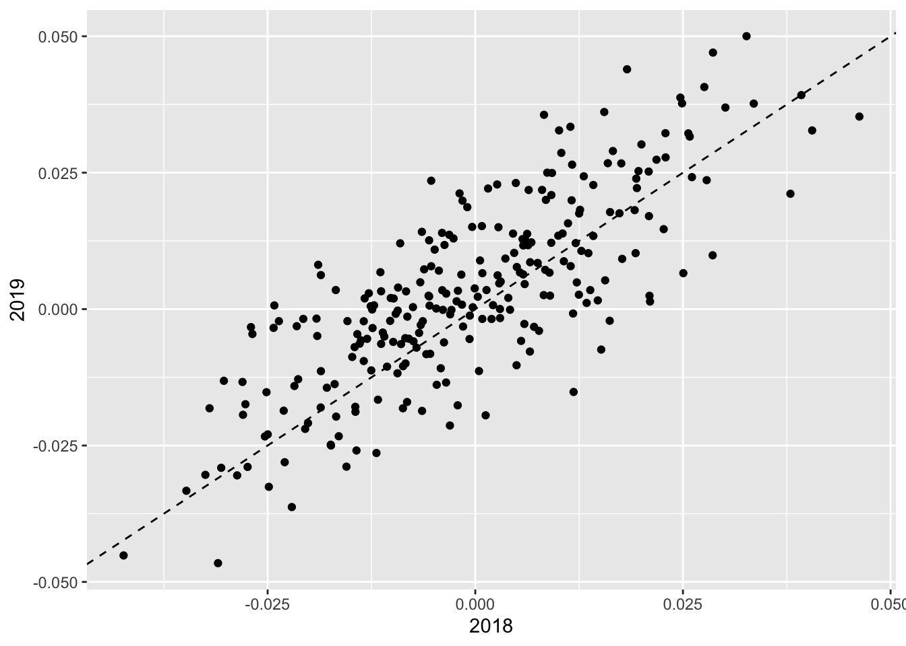
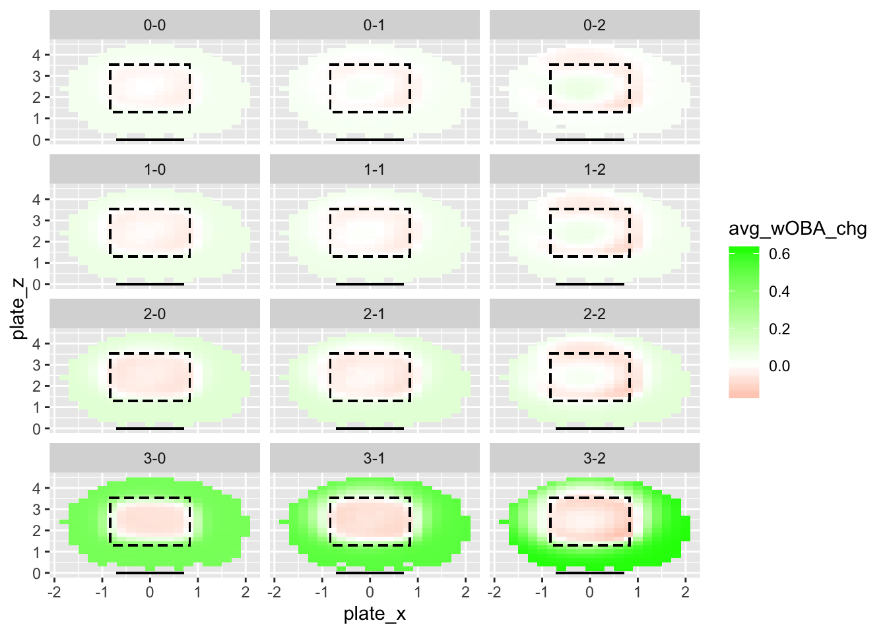

Last updated: 2020-02-21
Checks: 6 0
Knit directory: MLB/
This reproducible R Markdown analysis was created with workflowr (version 1.2.0). The Report tab describes the reproducibility checks that were applied when the results were created. The Past versions tab lists the development history.
Great! Since the R Markdown file has been committed to the Git repository, you know the exact version of the code that produced these results.
Great job! The global environment was empty. Objects defined in the global environment can affect the analysis in your R Markdown file in unknown ways. For reproduciblity it’s best to always run the code in an empty environment.
The command set.seed(20200202) was run prior to running the code in the R Markdown file. Setting a seed ensures that any results that rely on randomness, e.g. subsampling or permutations, are reproducible.
Great job! Recording the operating system, R version, and package versions is critical for reproducibility.
Nice! There were no cached chunks for this analysis, so you can be confident that you successfully produced the results during this run.
Great! You are using Git for version control. Tracking code development and connecting the code version to the results is critical for reproducibility. The version displayed above was the version of the Git repository at the time these results were generated.
Note that you need to be careful to ensure that all relevant files for the analysis have been committed to Git prior to generating the results (you can use wflow_publish or wflow_git_commit). workflowr only checks the R Markdown file, but you know if there are other scripts or data files that it depends on. Below is the status of the Git repository when the results were generated:
Ignored files:
Ignored: .RData
Ignored: .Rhistory
Ignored: .Rproj.user/
Ignored: data/mlb2017data.rds
Ignored: data/mlb2018data.rds
Ignored: data/mlb2019data.rds
Untracked files:
Untracked: .DS_Store
Untracked: code/BBrates.R
Untracked: code/park_factors.R
Untracked: code/xBB.R
Untracked: data/.DS_Store
Untracked: data/SteamerProjBatters2019.csv
Untracked: data/exit_velocity-2018.csv
Untracked: data/exit_velocity-2019.csv
Untracked: data/expected_stats-2018.csv
Untracked: data/expected_stats-2019.csv
Untracked: data/fangraphs-2018.csv
Untracked: data/fangraphs-2019.csv
Untracked: data/standard2015NP.csv
Untracked: data/standard2016.csv
Untracked: data/standard2016NP.csv
Untracked: data/standard2017.csv
Untracked: data/standard2017NP.csv
Untracked: data/standard2018.csv
Untracked: data/standard2018NP.csv
Untracked: data/standard2019.csv
Untracked: data/standard2019NP.csv
Untracked: output/event_vals.rds
Untracked: output/mlb_preproc.rds
Untracked: output/pitchloc_res.rds
Unstaged changes:
Modified: .gitignore
Deleted: output/README.md
Note that any generated files, e.g. HTML, png, CSS, etc., are not included in this status report because it is ok for generated content to have uncommitted changes.
These are the previous versions of the R Markdown and HTML files. If you’ve configured a remote Git repository (see ?wflow_git_remote), click on the hyperlinks in the table below to view them.
| File | Version | Author | Date | Message |
|---|---|---|---|---|
| Rmd | 4640476 | Jason Willwerscheid | 2020-02-21 | wflow_publish(“analysis/countloc_platedisc.Rmd”) |
My plate discipline metrics follow from the idea that a value can be assigned to either taking or swinging at a pitch, based solely on the pitch count and the location of the pitch.
The idea builds upon Tango, Lichtman, and Dolphin’s argument that each pitch count can be associated with an expected wOBA (weighted on-base average). It was also Tango, I think, who developed the wOBACON statistic. The statistic is somewhat erroneously named: “CON” stands for contact, but wOBACON is actually the expected wOBA conditional on a ball being put into play (that is, it excludes foul balls). I calculate year-to-year wOBACON and count-specific wOBA values here.
The crux of Tango and co.’s argument is that every pitch brings about a change of state: from one pitch count to another, or from a pitch count to a ball in play. My observation is that the decision to swing or not to swing limits the possibilities: if a batter swings, the result can be a strike, foul, or ball in play, while taking the pitch can only result in a ball or strike.
For example, let the count be 2-1. The expected change in wOBA conditional on the batter swinging is: \[ (1 - p_{\text{contact}} + p_{\text{contact}} p_{\text{foul}}) (\text{wOBA}_{\text{2-2}} - \text{wOBA}_{\text{2-1}}) + p_{\text{contact}} (1 - p_{foul}) (\text{wOBACON} - \text{wOBA}_{\text{2-1}}) \] The expected change conditional on the batter taking the pitch is: \[ p_{strike} (\text{wOBA}_{\text{2-2}} - \text{wOBA}_{\text{2-1}}) + (1 - p_{strike}) (\text{wOBA}_{\text{3-1}} - \text{wOBA}_{\text{2-1}}) \]
I evaluate plate discipline by abstracting away a hitter’s individual ability to make contact. In other words, I calculate \(p_{\text{contact}}\) (the probability of making contact with a pitch) and \(p_{\text{foul}}\) (the probability of fouling off a pitch, conditional on making contact) for an average hitter, conditioning only on pitch location. I calculate these probabilities here.
For each pitch, then, I have a way to calculate the expected change in wOBA when an average batter swings at a pitch and when an average batter takes a pitch. This says something about, for example, when an average batter should be swinging:
suppressMessages(library(tidyverse))
all_pitches <- readRDS("output/mlb_preproc.rds")
event_vals <- readRDS("output/event_vals.rds")
pitchloc_res <- readRDS("output/pitchloc_res.rds")
all_pitches <- all_pitches %>%
left_join(event_vals, by = c("game_year", "balls", "strikes")) %>%
left_join(pitchloc_res$looks, by = c("plate_x", "plate_z")) %>%
left_join(pitchloc_res$contact, by = c("plate_x", "plate_z")) %>%
left_join(pitchloc_res$fouls, by = c("plate_x", "plate_z")) %>%
left_join(pitchloc_res$swings, by = c("plate_x", "plate_z", "balls", "strikes"))
# Values of p_foul are NA for locations where no batters swung. These can be safely
# set to zero.
all_pitches <- all_pitches %>%
mutate(p_foul = ifelse(is.na(p_foul), 0, p_foul))
all_pitches <- all_pitches %>%
mutate(swing_value = (1 - p_contact) * strike_value + p_contact * p_foul * foul_value +
p_contact * (1 - p_foul) * HIP_value,
take_value = p_strike * strike_value + (1 - p_strike) * ball_value)
plot_df <- all_pitches %>%
group_by(balls, strikes, plate_x, plate_z) %>%
summarize(swing_benefit = mean(swing_value - take_value)) %>%
ungroup() %>%
mutate(count = paste(balls, strikes, sep = "-"))
plate_left <- -8.5 / 12
plate_right <- 8.5 / 12
sz_left <- plate_left - 2.94 / 2 / 12
sz_right <- plate_right + 2.94 / 2 / 12
sz_bot <- 15.53 / 12
sz_top <- 42.47 / 12
ggplot(plot_df, aes(x = plate_x, y = plate_z, fill = swing_benefit)) +
geom_tile() +
scale_fill_gradient2(low = "red", high = "dark green") +
geom_rect(aes(xmin = sz_left, xmax = sz_right, ymin = sz_bot, ymax = sz_top),
col = "black", linetype = "dashed", alpha = 0) +
geom_segment(aes(x = plate_left, xend = plate_right, y = 0, yend = 0)) +
facet_wrap(~count, nrow = 4, ncol = 3)Almost there: the last building block I need is an estimate of average hitters’ swing rates. I don’t want to give too much credit for making an easy decision: it’s much better not to swing when there are three balls and the pitch is low and outside, but if 99% of hitters decline to swing, then they shouldn’t be singled out for praise (I do, however, want to punish the 1% who do swing at these pitches). In other words, I’d like to evalute a hitter’s decision to swing or not to swing relative to an average hitter in a similar situation (i.e., same pitch count, same pitch location).
all_pitches <- all_pitches %>%
mutate(avg_wOBA_chg = p_swing * swing_value + (1 - p_swing) * take_value,
wOBAaa = swing * swing_value + (1 - swing) * take_value - avg_wOBA_chg)An example might be helpful at this point. The following is a plate appearance chosen at random, featuring Aledmys Diaz at bat:
ex <- all_pitches %>%
filter(PA_ID == 6666) %>%
select(player_name:called_strike, ball_value:wOBAaa) %>%
arrange(balls + strikes)
knitr::kable(ex %>% select(balls:HIP_value), digits = 3)| balls | strikes | plate_x | plate_z | swing | contact | foul | called_strike | ball_value | strike_value | foul_value | HIP_value |
|---|---|---|---|---|---|---|---|---|---|---|---|
| 0 | 0 | 0.4 | 1.0 | 0 | 0 | 0 | 0 | 0.041 | -0.051 | -0.051 | 0.059 |
| 1 | 0 | -0.4 | 3.2 | 1 | 1 | 0 | 0 | 0.067 | -0.061 | -0.061 | 0.018 |
knitr::kable(ex %>% select(balls:strikes, p_strike:wOBAaa), digits = 3)| balls | strikes | p_strike | p_contact | p_foul | p_swing | swing_value | take_value | avg_wOBA_chg | wOBAaa |
|---|---|---|---|---|---|---|---|---|---|
| 0 | 0 | 0.000 | 0.416 | 0.487 | 0.176 | -0.027 | 0.041 | 0.029 | 0.012 |
| 1 | 0 | 0.879 | 0.794 | 0.576 | 0.623 | -0.035 | -0.046 | -0.039 | 0.004 |
The first pitch is low (the bottom of the strike zone is plate_z \(\approx 1.3\)) and almost certain to be called a ball (p_strike \(\approx 0\)), so it’s much more advantageous to take the pitch (the difference between take_value and swing_value is about 70 points in expected wOBA). Diaz correctly takes the pitch, but so do 82% of batters (see p_swing), so Diaz only gets credited with 12 points of wOBAaa. The next pitch is a probable strike (p_strike \(\approx 0.88\)) with a good chance of contact (p_contact \(\approx 0.79\)), so it’s more advantageous to swing even though it’s a hitter’s count (the difference is about 11 points in expected wOBA). Diaz again makes the correct decision, as do 62% of hitters, so Diaz is credited with 4 points of wOBAaa. Diaz makes contact, flying out to center field and ending the plate appearance. For this PA, then, Diaz’s plate discipline has resulted in an expected wOBA that is 16 points higher than the expected wOBA for a batter with average plate discipline.
By taking the mean over all plate appearances, I estimate the total wOBA that can be ascribed to plate discipline alone. The 2019 leaders (with a minimum of 200 PAs) are:
player_res <- all_pitches %>%
group_by(player_name, game_year) %>%
summarize(n_PA = length(unique(PA_ID)),
PDwOBA = sum(wOBAaa) / n_PA) %>%
ungroup() %>%
filter(n_PA >= 200) %>%
select(-n_PA) %>%
spread(game_year, PDwOBA)
knitr::kable(player_res %>% top_n(20, `2019`) %>% arrange(desc(`2019`)), digits = 3)| player_name | 2017 | 2018 | 2019 |
|---|---|---|---|
| Andrew McCutchen | 0.031 | 0.035 | 0.044 |
| Cavan Biggio | NA | NA | 0.042 |
| Alex Bregman | 0.009 | 0.029 | 0.042 |
| Ji-Man Choi | NA | 0.016 | 0.041 |
| Jordan Luplow | NA | NA | 0.040 |
| Juan Soto | NA | 0.030 | 0.039 |
| Matt Joyce | 0.027 | 0.035 | 0.036 |
| George Springer | 0.020 | 0.023 | 0.036 |
| Russell Martin | 0.023 | 0.035 | 0.035 |
| Carlos Santana | 0.016 | 0.024 | 0.033 |
| Brandon Belt | 0.029 | 0.026 | 0.033 |
| Marcus Semien | 0.017 | 0.014 | 0.031 |
| Yasmani Grandal | -0.007 | 0.009 | 0.031 |
| Kris Bryant | 0.018 | 0.011 | 0.030 |
| Joey Votto | 0.047 | 0.044 | 0.030 |
| Brandon Nimmo | NA | 0.041 | 0.029 |
| Tony Kemp | NA | 0.022 | 0.029 |
| Mike Trout | 0.025 | 0.027 | 0.029 |
| Chris Taylor | 0.022 | 0.029 | 0.028 |
| Joe Panik | 0.014 | 0.022 | 0.028 |
According to this metric, Andrew McCutchen had the best plate discipline in baseball in 2019, despite being only 10th in BB% and league average for SO%. Two Astros also make the top ten (hmm).
The bottom ten are:
knitr::kable(player_res %>% top_n(10, desc(`2019`)) %>% arrange(`2019`), digits = 3)| player_name | 2017 | 2018 | 2019 |
|---|---|---|---|
| Javier Baez | -0.038 | -0.040 | -0.047 |
| Jorge Alfaro | NA | -0.027 | -0.044 |
| Francisco Mejia | NA | NA | -0.037 |
| Gary Sanchez | -0.023 | -0.023 | -0.036 |
| Harold Castro | NA | NA | -0.036 |
| Rowdy Tellez | NA | NA | -0.035 |
| Ronny Rodriguez | NA | -0.016 | -0.035 |
| Jose Abreu | -0.023 | -0.024 | -0.032 |
| Victor Reyes | NA | -0.039 | -0.031 |
| Corey Dickerson | -0.043 | -0.031 | -0.031 |
To interpret: Javier Baez posted a wOBA of .347 in 2019. This is already above average, but if he had been able to improve his plate discipline to league average, then — assuming average contact rates and wOBACON — he would have posted a wOBA of .394, which would have put him in the top ten (and tied with Juan Soto).
(Of course, the assumption about average contact rates and wOBACON is inaccurate; I’ll use player-specific contact rates and wOBACON in a subsequent analysis. However, I wanted to first do an analysis in which plate discipline was strictly comparable from player to player: players are penalized equally for swinging at the same bad pitches, and rewarded equally for swinging at meatballs.)
As a sanity check, it’s good to verify that there is some autocorrelation from year to year. Each point in the plot below represents a player who had at least 200 PAs in both 2018 and 2019:
ggplot(player_res, aes(x = `2018`, y = `2019`)) +
geom_point() +
geom_abline(slope = 1, linetype = "dashed")#> Warning: Removed 245 rows containing missing values (geom_point).
This is good: players who have above-average plate discipline tend to stay above average, and vice versa.
I’m also interesting in results for particular pitch counts. For example, I’d like to know who has the best (and worst) plate discipline when the count is 0-0:
first_pitch <- all_pitches %>%
filter(balls == 0, strikes == 0) %>%
group_by(player_name, game_year) %>%
summarize(n_PA = n(), PDwOBA = sum(wOBAaa) / n()) %>%
ungroup() %>%
filter(n_PA >= 200) %>%
select(-n_PA) %>%
spread(game_year, PDwOBA)
knitr::kable(first_pitch %>% top_n(10, `2019`) %>% arrange(desc(`2019`)), digits = 3)| player_name | 2017 | 2018 | 2019 |
|---|---|---|---|
| Khris Davis | 0.005 | 0.005 | 0.007 |
| Brandon Lowe | NA | NA | 0.007 |
| Freddie Freeman | 0.004 | 0.006 | 0.006 |
| Luke Voit | NA | NA | 0.006 |
| Chris Taylor | 0.001 | 0.003 | 0.005 |
| Oscar Mercado | NA | NA | 0.005 |
| Jordan Luplow | NA | NA | 0.005 |
| Jeff McNeil | NA | 0.005 | 0.005 |
| Kole Calhoun | 0.002 | 0.004 | 0.005 |
| Jake Marisnick | 0.000 | 0.000 | 0.004 |
knitr::kable(first_pitch %>% top_n(5, desc(`2019`)) %>% arrange(`2019`), digits = 3)| player_name | 2017 | 2018 | 2019 |
|---|---|---|---|
| Jonathan Lucroy | -0.005 | -0.004 | -0.008 |
| Ronny Rodriguez | NA | NA | -0.007 |
| Curtis Granderson | -0.003 | -0.003 | -0.006 |
| David Fletcher | NA | -0.004 | -0.005 |
| Victor Reyes | NA | NA | -0.005 |
To see what’s driving these numbers, I compare the 2019 swing charts of Khris Davis and Jonathan Lucroy, limiting results to 0-0 pitches:
plot_df <- all_pitches %>%
filter(balls == 0, strikes == 0, game_year == 2019,
player_name %in% c("Khris Davis", "Jonathan Lucroy"))
ggplot(plot_df, aes(x = plate_x, y = plate_z, shape = factor(swing), col = wOBAaa)) +
geom_jitter() +
scale_shape_manual(values = c("circle", "cross")) +
scale_color_gradient2(low = "red", high = "dark green") +
theme_minimal() +
geom_rect(aes(xmin = sz_left, xmax = sz_right, ymin = sz_bot, ymax = sz_top),
col = "black", linetype = "dashed", alpha = 0) +
geom_segment(aes(x = plate_left, xend = plate_right, y = 0, yend = 0), col = "black") +
facet_wrap(~player_name)Clearly, Lucroy is taking too many pitches over the middle of the plate: as a result, he loses about 8 points of wOBA. Khris Davis swings at most of these pitches, and while he also swings at a few pitches outside the zone, he ends up netting around 7 points of wOBA at 0-0.
I repeat the analysis for 3-2, which is the count with by far the highest leverage. I limit results to players who have at least 40 PAs that have reached 3-2 (these results are much noisier, since there are necessarily fewer PAs that reach a full count):
full_count <- all_pitches %>%
filter(balls == 3, strikes == 2) %>%
group_by(player_name, game_year) %>%
summarize(n_PA = length(unique(PA_ID)), PDwOBA = sum(wOBAaa) / n()) %>%
ungroup() %>%
filter(n_PA >= 40) %>%
select(-n_PA) %>%
spread(game_year, PDwOBA)
knitr::kable(full_count %>% top_n(10, `2019`) %>% arrange(desc(`2019`)), digits = 3)| player_name | 2017 | 2018 | 2019 |
|---|---|---|---|
| Luke Voit | NA | NA | 0.071 |
| Howie Kendrick | NA | NA | 0.070 |
| Wilson Ramos | NA | 0.023 | 0.068 |
| Ji-Man Choi | NA | 0.020 | 0.067 |
| Robbie Grossman | 0.054 | 0.039 | 0.063 |
| Billy Hamilton | 0.016 | -0.030 | 0.061 |
| Cavan Biggio | NA | NA | 0.060 |
| Robinson Chirinos | 0.004 | 0.025 | 0.059 |
| David Bote | NA | NA | 0.059 |
| Joey Gallo | 0.024 | 0.056 | 0.057 |
knitr::kable(full_count %>% top_n(5, desc(`2019`)) %>% arrange(`2019`), digits = 3)| player_name | 2017 | 2018 | 2019 |
|---|---|---|---|
| Javier Baez | -0.070 | -0.047 | -0.122 |
| Shohei Ohtani | NA | -0.015 | -0.092 |
| Matt Adams | NA | NA | -0.086 |
| Colin Moran | NA | 0.027 | -0.082 |
| Jose Abreu | -0.054 | -0.023 | -0.073 |
I compare 2019 swing charts for Luke Voit and Javier Baez:
plot_df <- all_pitches %>%
filter(balls == 3, strikes == 2, game_year == 2019,
player_name %in% c("Luke Voit", "Javier Baez"))
ggplot(plot_df, aes(x = plate_x, y = plate_z, shape = factor(swing), col = wOBAaa)) +
geom_jitter() +
scale_shape_manual(values = c("circle", "cross")) +
scale_color_gradient2(low = "red", high = "dark green") +
theme_minimal() +
geom_rect(aes(xmin = sz_left, xmax = sz_right, ymin = sz_bot, ymax = sz_top),
col = "black", linetype = "dashed", alpha = 0) +
geom_segment(aes(x = plate_left, xend = plate_right, y = 0, yend = 0), col = "black") +
facet_wrap(~player_name)Voit almost always takes on 3-2, while Baez chases a lot of bad pitches. As a result, Voit gains an expected 71 points of wOBA, while Baez loses a whopping 122. (I emphasize that this is only for PAs that reach full count: it does not subtract 122 points from Baez’s total wOBA, but rather, since only around 11% of his PAs reach full count, the overall penalty is 14 points.)
Incidentally, the estimates of average swinging behavior allow us to say something about where a pitcher should locate a pitch when facing an average hitter. In the plots below, the red areas are favorable for the pitcher, while the green areas give an advantage to the hitter. The upshot: it’s best to pitch over the middle of the plate until there’s one strike; with more strikes, the pitcher can start to locate pitches at the edges of the strike zone; in any case, though, it’s a very bad idea to pitch off of the plate when there are three balls. Even at 3-2, a pitcher should prefer the middle of the strike zone to a pitch off of the plate.
(Of course, these recommendations can be improved when the hitter’s specific preferences are known. I plan to tackle this problem in a future analysis.)
plot_df <- all_pitches %>%
group_by(balls, strikes, plate_x, plate_z) %>%
summarize(avg_wOBA_chg = mean(avg_wOBA_chg)) %>%
ungroup() %>%
mutate(count = paste(balls, strikes, sep = "-"))
ggplot(plot_df, aes(x = plate_x, y = plate_z, fill = avg_wOBA_chg)) +
geom_tile() +
scale_fill_gradient2(low = "red", high = "green") +
geom_rect(aes(xmin = sz_left, xmax = sz_right, ymin = sz_bot, ymax = sz_top),
col = "black", linetype = "dashed", alpha = 0) +
geom_segment(aes(x = plate_left, xend = plate_right, y = 0, yend = 0)) +
facet_wrap(~count, nrow = 4, ncol = 3)
sessionInfo()#> R version 3.5.3 (2019-03-11)
#> Platform: x86_64-apple-darwin15.6.0 (64-bit)
#> Running under: macOS Mojave 10.14.6
#>
#> Matrix products: default
#> BLAS: /Library/Frameworks/R.framework/Versions/3.5/Resources/lib/libRblas.0.dylib
#> LAPACK: /Library/Frameworks/R.framework/Versions/3.5/Resources/lib/libRlapack.dylib
#>
#> locale:
#> [1] en_US.UTF-8/en_US.UTF-8/en_US.UTF-8/C/en_US.UTF-8/en_US.UTF-8
#>
#> attached base packages:
#> [1] stats graphics grDevices utils datasets methods base
#>
#> other attached packages:
#> [1] forcats_0.4.0 stringr_1.4.0 dplyr_0.8.0.1 purrr_0.3.2
#> [5] readr_1.3.1 tidyr_0.8.3 tibble_2.1.1 ggplot2_3.2.0
#> [9] tidyverse_1.2.1
#>
#> loaded via a namespace (and not attached):
#> [1] Rcpp_1.0.1 highr_0.8 cellranger_1.1.0 pillar_1.3.1
#> [5] compiler_3.5.3 git2r_0.25.2 workflowr_1.2.0 tools_3.5.3
#> [9] digest_0.6.18 lubridate_1.7.4 jsonlite_1.6 evaluate_0.13
#> [13] nlme_3.1-137 gtable_0.3.0 lattice_0.20-38 pkgconfig_2.0.2
#> [17] rlang_0.4.2 cli_1.1.0 rstudioapi_0.10 yaml_2.2.0
#> [21] haven_2.1.1 xfun_0.6 withr_2.1.2 xml2_1.2.0
#> [25] httr_1.4.0 knitr_1.22 hms_0.4.2 generics_0.0.2
#> [29] fs_1.2.7 rprojroot_1.3-2 grid_3.5.3 tidyselect_0.2.5
#> [33] glue_1.3.1 R6_2.4.0 readxl_1.3.1 rmarkdown_1.12
#> [37] modelr_0.1.5 magrittr_1.5 whisker_0.3-2 backports_1.1.3
#> [41] scales_1.0.0 htmltools_0.3.6 rvest_0.3.4 assertthat_0.2.1
#> [45] colorspace_1.4-1 labeling_0.3 stringi_1.4.3 lazyeval_0.2.2
#> [49] munsell_0.5.0 broom_0.5.1 crayon_1.3.4